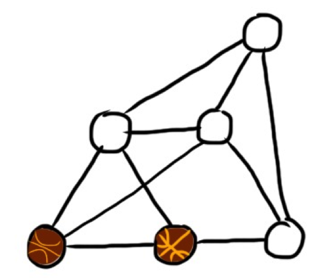
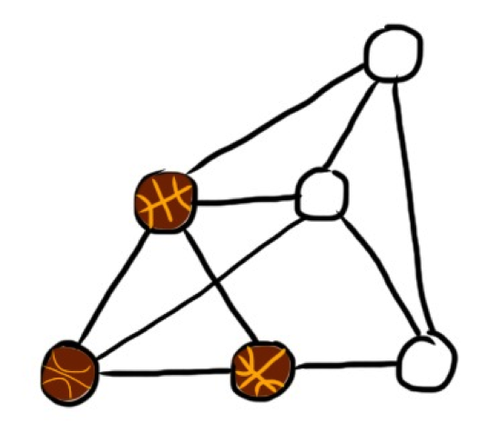
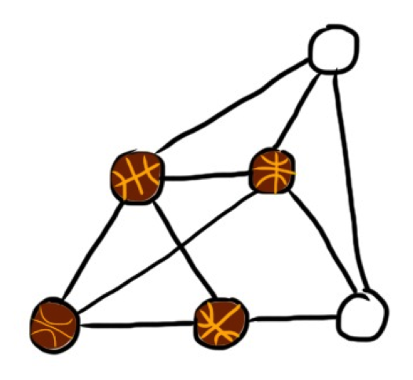
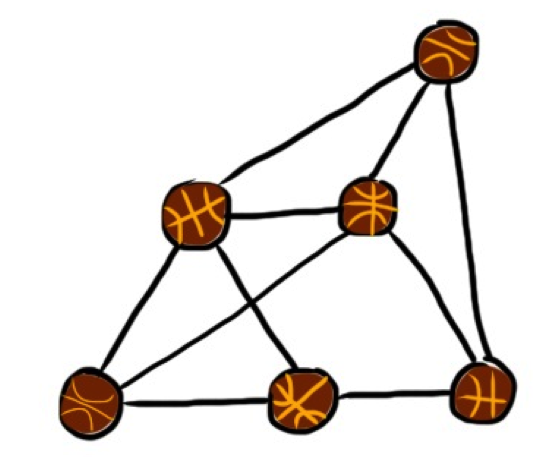
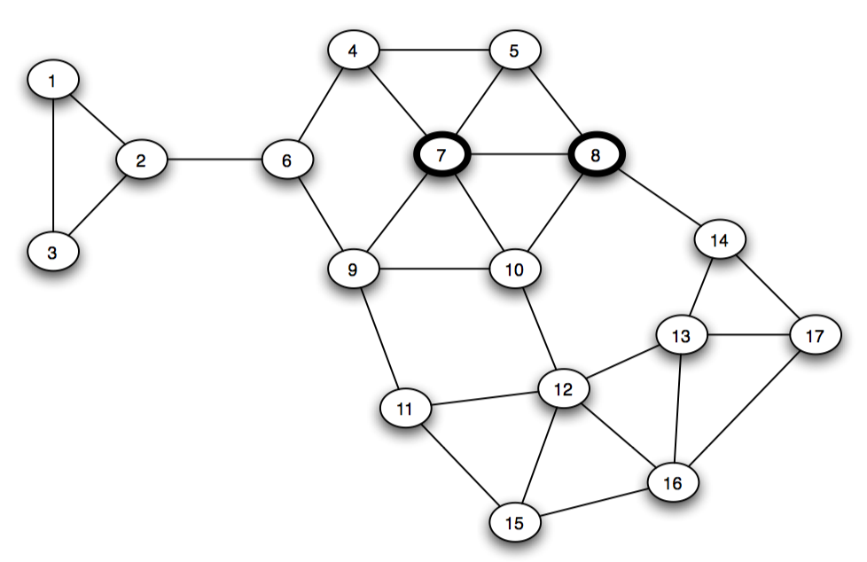
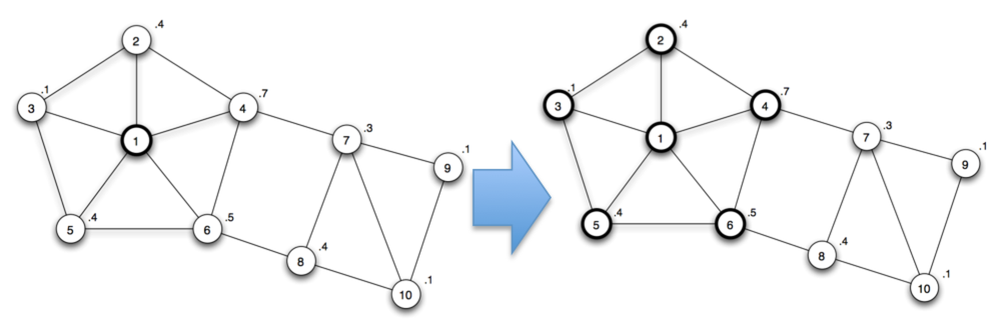

Análisis de Redes Sociales
Guillermo Jiménez Díaz (gjimenez@ucm.es)
Alberto Díaz (albertodiaz@fdi.ucm.es)
Tema 9: Propagación y Difusión en Redes
Propagación y Difusión
Modelar la propagación de elementos:
- Enfermedades
- Vídeos virales
- Rumores
- Virus informáticos
- Compra de productos
- Anuncios
- Información e innovación…
Propagación y Difusión
Modelos similares independientemente de lo que queramos propagar
- Basados en modelos de propagación clásicos de epidemias (1927)
- Aplicados a redes (2001)
- Estructura de la red influye en la propagación
Propagación y Difusión
- Modelos de contagio simple
- Modelos de contagio aplicados a redes
- Modelos de contagio complejos
- Difusión de opiniones e innovación
- Aplicaciones
Modelos de contagio simple
Modelos de contagio simple
La epidemiología es la ciencia que estudia la salud y control de enfermedades en una población, así como la predicción de expansión de dichas enfermedades.
El modelo general se basa en dos hipótesis:
- Modelo compartimental
- Mezcla homogénea
Modelo compartimental
Cada individuo puede estar en un determinado estado dependiendo de en qué fase se la enfermedad se encuentra.
- Susceptible (S): El individuo está sano y puede ser infectado.
- Infectado (I): El individuo está infectado y puede contagiar a otros individuos.
- Recuperado (R): El individuo estuvo contagiado pero se ha recuperado y no puede volver a ser contagiado. También se utiliza para modelar los individuos que no han superado la enfermedad y que han muerto a causa de ella.
Modelo compartimental
Existen otros modelos en los que se usan otros estados adicionales, como el inmune (no ha sido infectado y no se puede infectar) o el latente (ha sido contagiado pero aún no está infectado y, por tanto, aún no es contagioso).
Mezcla homogénea
Cualquier individuo tiene la misma probabilidad de entrar en contacto con un individuo infectado.
- Modelado como una red aleatoria
- Elimina la necesidad de conocer los contactos (la red) de individuos
- Se asume que cualquiera puede infectar a cualquiera
Modelos de contagio simple
Los modelos observan los cambios de estado de los individuos a lo largo del tiempo para predecir el alcance y la velocidad de propagación de la enfermedad.
Modelos de propagación clásicos:
- Modelo SI
- Modelo SIS
- Modelo SIR
Modelo SI
Modelo SI
- Cada individuo tiene \(\langle k \rangle\) contactos
- Tasa de contagio \(\delta\): Probabilidad de que un individuo infectado transmita la enfermedad a uno susceptible.
- \(N\) es el tamaño de la población: \(N = S(t) + I(t)\)
- \(S(t)\): número de individuos que están en el estado susceptible en \(t\)
- \(I(t)\): número de individuos que están en el estado infectado en \(t\)
Modelo SI
En realidad no trabajaremos con números absolutos:
- \(s(t) = s = \frac{S(t)}{N}\): Proporción de susceptibles
- \(i(t) = i = \frac{I(t)}{N}\): Proporción de infectados.
- \(s+i=1\)
- \(\beta = \delta \cdot \langle k \rangle\): Tasa de transmisión
Modelo SI
Tasa a la que varía el número de infectados
\[\frac{di}{dt} = i \cdot \beta \cdot s = i \cdot \beta \cdot (1-i)\]
Resolviendo la ecuación:
\[i = \frac{i_0exp(\beta t)}{1-i_0+i_0exp(\beta t)}\]
Conclusiones del modelo SI
Inicialmente el número de infectados crece exponencialmente
A medida que el número de infectados se hace mayor, hay menos individuos susceptibles por lo que el crecimiento de infectados se ralentiza
La infección termina cuando todos están infectados
\(i(t \to \infty)= 1\)
Tiempo característico
El tiempo característico \(\tau\) es el tiempo que tarda la enfermedad en alcanzar al \(\frac{1}{e}\) (aprox. el 36%) de la población.
Para el modelo SI \[
\tau = \frac{1}{\beta}
\]
Aumentar la densidad de enlaces (\(\langle k \rangle\)) o la velocidad de propagación original (\(\delta\)) aumenta la tasa de transmisión y, por tanto, reduce el tiempo característico.
Modelo SIS
Modelo SIS
- Parámetros anteriores
- Tasa de recuperación \(\mu\): Proporción de infectados que se recuperan y pasan al estado susceptible en cada instante de tiempo.
Modelo SIS
Tasa a la que varía el número de infectados:
\[\frac{di}{dt} = i \cdot \beta \cdot s - \mu \cdot i= i \cdot \beta \cdot (1-i) - \mu \cdot i\]
La resolución de esta ecuación:
\[i = \Big(1- \frac{\mu}{\beta}\Big) \frac{C \cdot e^{(\beta - \mu)t}}{1 + C \cdot e ^{(\beta -\mu)t}}\]
\[C= \frac{\beta \cdot i_0}{\beta - \mu - \beta \cdot i_0}\]
Conclusiones del Modelo SIS
- Como la recuperación es posible, el sistema alcanza un estado endémico en el que la tasa de infectados es constante:
\[i(\infty) = 1 - \frac{\beta}{\mu}\]
Sólo se produce cuando la tasa de recuperación es inferior a la tasa de transmisión (\(\mu < \beta\))
Si \(\mu > \beta\) entonces, llegado a un determinado punto, la proporción de infectados comienza a decrecer exponencialmente, alcanzado un estado libre de enfermedad en la que todos los individuos se han recuperado y no hay infectados.
Tiempo característico
\[
\tau = \frac{1}{\mu (R_0 - 1)}
\]
\[R_0 = \frac{\beta}{\mu}\]
- \(R_0\) se conoce como ritmo reproductivo básico
Ritmo reproductivo básico
El ritmo reproductivo básico (\(R_0\)) representa el número promedio de individuos susceptibles que serán infectados por un individuo infectado
- Si \(R_0<1\) entonces la enfermedad termina desapareciendo de la población
- Si \(R_0>0\) entonces la enfermedad se propagará
Ritmo reproductivo básico
- Cuanto mayor sea \(R_0\), más rápido es el proceso de propagación de la enfermedad
Modelo SIR
Modelo SIR
- \(\mu\) representa la tasa de recuperación: es la tasa de individuos infectados que pasan al estado recuperado.
- \(N = S(t) + I(t) + R(t)\)
- \(i = 1-s-r\).
- Condiciones iniciales habituales
\[i_0 = \frac{c}{N}\text{; }s_0 = 1- \frac{c}{N}\text{; }r_0 = 0\]
Modelo SIR
\[\frac{di}{dt} = i \cdot \beta \cdot s - \mu \cdot i\] \[\frac{ds}{dt} = -i \cdot \beta \cdot s\] \[\frac{dr}{dt} = \mu \cdot i\]
Conclusiones del Modelo SIR
- \(\beta>\mu\): la proporción de infectados crece hasta un pico máximo y luego decrece hasta valer 0.
- \(s\) decrece de forma monótona pero no llega nunca a 0
- Los individuos que se mantienen susceptibles hasta fases avanzadas pueden no llegar a infectarse nunca.
Conclusiones del Modelo SIR
- \(r\) crece de manera monótona.
- Nunca llega a valer 1
- Su valor asintótico representa el número de individuos afectados
\[r = 1- s_0 \cdot e^{-\beta \frac{r}{\mu}}\]
Comportamientos importantes de los modelos epidemiológicos
Comportamientos importantes
- Comportamiento temprano: patrón de comportamiento en las fases iniciales
- Es importante para saber cuánto tiempo tenemos para el desarrollo de vacunas e intervenciones médica
- Comportamiento tardío: patrón de comportamiento en las fases más avanzadas de la epidemia (cuando \(t \to \infty\))
- Permite predecir el alcance, número de infectados, etc.
Comportamientos de los modelos
Comportamiento temprano
En todos los modelos el número de infectados en la fase temprana es bajo pero crece exponencialmente.
El modelo SI es el más relevante para describir este comportamiento
Comportamiento tardío
Cada modelo realiza una predicción distinta
- En el modelo SI todos terminan infectados
- En el modelo SIS (\(R_0>1\)) se alcanza un estado endémico en el que una proporción de la población queda infectada
- En el modelo SIS (\(R_0<1\)) la enfermedad desaparece
- En el modelo SIR todos terminan recuperados (en el estado susceptible o recuperado, pero no infectados)
Modelos de contagio simple
Estos modelos no tienen en cuenta la red de contactos ya que suponen que hay una mezcla homogénea
Realmente, las epidemias se propagan a través de los contactos de las personas, es decir, a través de los enlaces de su red social
La estructura de la red modificará el comportamiento de estos modelos simples
Modelos de contagio basados en redes
Modelos de contagio basados en redes
- Similares a los modelos de contagio simples
- Solo se tendrán en cuenta los contactos definidos por la red
- \(\beta\) es el ratio de transmisión y representa la probabilidad de contagio de un nodo infectado a un vecino susceptible
Simulación de modelos de contagio basados en redes
- Definimos una red de \(N\) nodos y \(L\) enlaces. Inicialmente todos los nodos están en el estado S.
- En \(t_0\) ponemos una pequeña fracción \(i_0\) de nodos (o solo 1), en el estado I.
- En cada paso de tiempo, hacemos que cada uno de los nodos en el estado I propague la infección a cada uno de sus vecinos en estado S con probabilidad \(\beta\)
- En caso de utilizar un modelo SIR o SIS, haremos que los nodos en estado I puedan pasar al estado R (o S, dependiendo del modelo), con una probabilidad \(\mu\).
Simulación de modelos de contagio basados en redes
- Alternativas más complejas (y más realistas), basadas en técnicas de modelado social o modelado basado en agentes
- Cada individuo (nodo) se modela como un agente que puede incluir sus propias características individuales
- Cada agente puede generar comportamientos emergentes
- Se pueden incluir procesos estocásticos: simular eventos aleatorios
Simulación de modelos de contagio basados en redes
Estructura de la red y procesos dinámicos
La topología de la red va a influir en el proceso de contagio
- ¿A qué estado convergen los nodos?
- ¿Cuánto se tarda en llegar a dicho estado?
- ¿Cómo se puede inmunizar un sistema complejo con una topología de red concreta?
Redes aleatorias
Redes aleatorias
Conclusión: la densidad de la red afecta a la velocidad de infección y al número de individuos infectados
A mayor densidad, mayor es el número de individuos infectados y mayor es la velocidad de propagación.
Conclusión: si partimos de un único nodo, sólo se infectarán los nodos que pertenecen a la misma componente conexa.
La epidemia se extiende en mayor o menor medida dependiendo de la localización del nodo inicial
La probabilidad de que un nodo pertenezca a la componente gigante es \(\frac{N_G}{N}\).
Redes libres de escala
Redes libres de escala
Conclusión: el enlace preferencial favorece el contagio
Los hubs son los responsables de ayudar a difundir más rápidamente la infección
Redes de Watts-Strogatz
Redes de Watts-Strogatz
Conclusión: los enlaces débiles (de largo alcance) provocan que aumente la velocidad de la infección
En el mismo tiempo se aprecia un mayor número de nodos infectados cuanto mayor es la probabilidad de reenlaces
Soluciones analíticas
Soluciones analíticas
- Aproximación por bloques de grados: distintos bloques de nodos basados en el grado que tienen
- Asumimos que todos los nodos en el mismo bloque son estadísticamente equivalentes \[i_k = \frac{I_k}{N_k}\]
- La suma de los diferentes \(i_k\) para todos los grados dan la fracción total de nodos infectados \(i\)
Modelo SI en redes
Modelo SI en redes
- Tasa de infectados para cada grado \(k\) por separado:
\[\frac{di_k}{dt} = \beta (1-i_k(t))k \Theta_k(t)\]
- \(\Theta_k(t)\) es una función de densidad que representa la fracción de vecinos que están infectados para un nodo de grado \(k\)
- Necesitaremos definir \(k_{max}\) ecuaciones
Modelo SI en redes
Función de densidad
\[\Theta_k(t) \approx \Theta(t) = \frac{\sum_{k'}(k'-1)\cdot P(k') \cdot i_{k'}(t)}{\langle k \rangle}\]
Aproximación durante el comportamiento temprano
\[\frac{di_k}{dt} = \beta k i_0 \frac{\langle k \rangle-1}{\langle k \rangle} e^{t/\tau}\]
\[i_k = i_0 (1+ \frac{k \langle k \rangle -1}{\langle k^2 \rangle - \langle k \rangle}(e^{t/\tau}-1))\]
Modelo SI en redes
Aproximación durante el comportamiento temprano
\[i = i_0 (1+ \frac{\langle k \rangle^2 - \langle k \rangle}{\langle k^2 \rangle - \langle k \rangle}(e^{t/\tau}-1))\]
- \(\tau\) representa el tiempo característico
- Menor \(\tau \to\) más rápido se propaga la enfermedad
\[\tau = \frac{\langle k \rangle}{\beta(\langle k^2 \rangle - \langle k \rangle)}\]
Modelo SI en redes
- Cuanto mayor sea el grado de un nodo mayor es la probabilidad de que ese nodo sea infectado
- El tiempo característico depende de los momentos de primer y segundo orden de la distribución de grados (\(\langle k \rangle\) y \(\langle k^2 \rangle\), respectivamente)
Modelo SI en redes
Conclusión: En una red aleatoria el tiempo característico depende de la densidad de la red
La epidemia se propaga más rápido cuanto más densa sea ésta (mayor \(\langle k \rangle\)).
\[\tau_{ER} = \frac{1}{\beta(\langle k \rangle)} \text{ ya que } \langle k^2 \rangle = \langle k \rangle (\langle k \rangle - 1)\]
Modelo SI en redes
Conclusión: En una red libre de escala los momentos dependen de \(\gamma\)
\(\gamma \geq 3\): ambos momentos son finitos y el contagio se comporta de manera similar a la red aleatoria
Modelo SI en redes
\(\gamma < 3\): \(\langle k^2 \rangle\) diverge y \(\tau \to 0\)
El tiempo característico característico desaparece y la epidemia es instantánea
Los hubs son los primeros nodos en infectarse e infectan más rápidamente a la mayoría de los nodos.
Modelos SIS en redes
Modelos SIS en redes
Tasa de infectados
\[\frac{di_k}{dt} = \beta (1-i_k(t))k \Theta_k(t) _ \mu \cdot i_k(t)\]
El tiempo característico \(\tau\)
\[\tau^{SIS} = \frac{\langle k \rangle}{\beta \langle k^2 \rangle - \mu \langle k \rangle}\]
Modelos SIS en redes
- Para un tamaño suficientemente grande de \(\mu\) el tiempo característico se hace negativo e \(i_k\) decrece exponencialmente
- Sin embargo, depende de la topología de la red
Modelos SIS en redes
- Ritmo reproductivo básico \(R_0 = \frac{\beta}{\mu}\): representativo de la enfermedad (o de lo que queremos difundir)
- Cuanto mayor es el ritmo reproductivo básico más probable es que la enfermedad se propague
- Umbral epidemiológico (\(\lambda_C\)): Mínimo valor de \(R_0\) necesario para que se propague la enfermedad
- También dependerá de la estructura de la red
Modelos SIS en redes
\[R_0 > \frac{1}{\langle k \rangle +1}\]
\[\lambda_C = \frac{1}{\langle k \rangle +1}\]
- Siempre va a ser distinto de cero
- Dependiendo del valor de \(R_0\), podemos conseguir que la epidemia alcance un estado endémico (si \(R_0 > \lambda_C\)) o que la epidemia desaparezca (si \(R_0 < \lambda_C\)).
Modelos SIS en redes
- Para una red libre de escala
\[\lambda_C = \frac{\langle k \rangle}{\langle k^2 \rangle}\]
- \(\gamma < 3\): el umbral epidemiológico desaparece
Incluso las enfermedades que son difíciles de transmitir se pueden propagar en una red libre de escala
Consecuencia de los hubs: en el momento en el que la enfermedad infecta un hub puede pasar a un número muy grande de nodos, persistiendo en la población
Modelos de contagio simple en redes
Modelos de contagio complejo
Modelos de contagio complejo
- Contagio simple: el contagio se produce uno a uno
- Basta con que un vecino de un determinado nodo esté infectado para que se pueda quedar infectado
- En algunos procesos como el contagio social o inducir a comprar un producto, no basta con que uno de mis vecinos tenga una determinada “opinión” para cambiar la mía
- Contagio complejo o contagio basado en umbrales: es necesario sea una fracción de mis vecinos tenga una determinada “opinión” para cambiar la mía
Modelos de contagio complejo
Contagio basado en umbrales
- \(k\) que define el número de vecinos que han de estar infectados para que un nodo quede infectado (Modelo de contagio simple: \(k=1\))
- \(p\) que define el porcentaje de vecinos que han de estar infectados para que un nodo quede infectado.
Modelos de contagio complejo
La propagación depende principalmente de:
- La estructura de la red.
- El valor del umbral utilizado.
- La elección de los nodos inicialmente infectados.
Modelos de contagio complejo
Modelos de contagio complejo
- En una red de mundo pequeño (Watts-Strogatz) los enlaces débiles o atajos ya no funcionan como medio para aumentar la velocidad de propagación.
- En una red libre de escala, los hubs pierden importancia en la velocidad de propagación ya que, aunque llegan a muchos nodos, solo ellos no son capaces de propagar la enfermedad
- En una red aleatoria la propagación depende muy decisivamente de los nodos inicialmente infectados
Modelos de difusión de opinión en redes
Modelos de difusión de opinión en redes
Aunque el modelo de contagio complejo basado en umbrales puede ser adecuado para algunos procesos de difusión, existen otros modelos más adecuados
- Los modelos basados en efectos de beneficio directo se basan en que la adopción de una opinión se ve reforzada por el beneficio que se consigue por la adopción de dicha opinión
- Estos beneficios son mayores cuantos más vecinos adopten esa misma opinión.
Juego de coordinación en redes
Juego de coordinación en redes
- Cada nodo tiene que elegir entre dos posibles opciones: A o B
- Existe un beneficio si dos nodos conectados eligen la misma opción
- Si dos nodos eligen la opción A entonces obtienen un beneficio de valor \(a>0\).
- Si dos nodos eligen la opción B entonces obtienen un beneficio de valor \(b>0\)
- \(p\) es la fracción de vecinos que adoptan la opción A
- \((1-p)\) es la fracción de vecinos que adoptan la opción B
Juego de coordinación en redes
- Un nodo de grado \(k\) adopta la opción A si:
\[p \cdot k \cdot a \geq (1-p) \cdot k \cdot b\]
Convertir a un modelo de difusión basado en umbrales (\(q\))
\[q = \frac{b}{a+b}\]
- Si tenemos una proporción de \(q\) vecinos que han adoptado la opción A entonces elegiremos la opción A
- En otro caso, adoptar la opción B.
Juego de coordinación en redes
Dos estados de equilibrio posibles:
- Todos adoptan la opción A
- Todos adoptan la opción B
¿Qué pasaría si, partiendo de un estado de equilibrio, algunos nodos (adoptadores iniciales) cambian su opción de manera aleatoria?
¿Se va a producir una propagación en cascada de este comportamiento o se detendrá en algún momento y no se propagará?
Juego de coordinación en redes
Ejemplo: red en la que todos los nodos han adoptado la opción B, \(a=3\) y \(b=2\)
- B = “jugar al fútbol”
- A = “jugar al baloncesto”
- \(q = \frac{2}{3+2} = \frac{2}{5}\)
- 2 nodos cambian a A por factores externos (una empresa les regala un par de zapatillas para jugar al baloncesto)
Juego de coordinación en redes

Juego de coordinación en redes

Juego de coordinación en redes

Juego de coordinación en redes

Juego de coordinación en redes
- No podemos suponer que la cascada de adopciones va a llegar a toda la red (cascada completa)
- Hay ocasiones en la que la cascada se detiene aunque aún hay nodos que siguen manteniendo la opción B
Juego de coordinación en redes
- Modelo usado para simular posibles campañas de marketing viral
- Ayuda a tomar decisiones para que se produzca una cascada de difusión aceptable:
- qué nodos hay que influir
- cuánto hay que incrementar el beneficio (por ejemplo, la calidad de un producto) para que se produzca una cascada de difusión aceptable.
Juego de coordinación en redes
Opción 1: Modificar el beneficio \(a\).
- Si aumentamos \(a =4\)…
- \(q\) baja a \(q=\frac{1}{3}\)
La adopción no solo depende de la estructura de la red sino también de las diferencias de beneficios entre A y B
Juego de coordinación en redes
Opción 2: decidir a qué nodos de la red es necesario influir para hacer que la cascada de adopciones alcance al mayor número posible de nodos en la red
- Elegir el menor número de nodos posible
- Elegirlos adecuadamente para conseguir que la cascada se propague
Elección basada intrínsecamente en su posición dentro de la red.
Juego de coordinación en redes
- Ejemplo: Cambiamos de estado a los nodos 12 y 13
- Ejemplo: Cambiamos de estado a los nodos 11 y 14

El papel del peso de los enlaces y las comunidades
Peso de los enlaces o tie strength
- Hasta ahora hemos considerado que el peso de los enlaces es el mismo para toda la red.
- Este peso (conocido como tie strenght) influye realmente en los procesos de difusión.
En una red de teléfonos móviles en la que los enlaces tienen información del número de minutos que cada teléfono está en comunicación con otro, podemos suponer que cierta información se propagará más rápidamente entre aquellos teléfonos que pasan más tiempo en contacto.
Peso de los enlaces o tie strength
- Modelo basado en umbrales:
\[p_{ij} = \beta \cdot w_{ij}\]
- \(\beta\) es la tasa de transmisión
- \(w_{ij}\) es el peso del enlace.
Peso de los enlaces o tie strength
Peso de los enlaces o tie strength
- La información circula más rápidamente en la red de control.
- Cuando la información alcanza una comunidad (un grupo de nodos con enlaces de gran peso) la información se propaga rápidamente dentro de ella.
- Sin embargo, como los enlaces entre comunidades suelen ser débiles, la información tiene dificultades de escapar de la comunidad.
Efecto de las comunidades
La existencia de comunidades tiene una fuerte influencia en los procesos de difusión
- Las comunidades permiten que se produzca la propagación de los modelos basados en umbrales.
- Las comunidades sirven de barrera para la difusión
- Distintas opiniones puedan convivir en la misma red
Otros modelos complejos de difusión
Nodos bilingües
Nodos bilingües: nodos que pueden adoptar la opción A y B simultáneamente pero con una penalización \(c\)
Consiguen que la opinión minoritaria persista en la red en condiciones en las que la opinión minoritaria desaparecería
Umbrales heterogéneos
- Cada nodo \(v\) tiene su propio beneficio por adoptar la opción A (\(a_v\)) y su propio beneficio por adoptar la opción B (\(b_v\))
- La simulación de este modelo funciona de manera similar al anterior salvo porque cada nodo posee su propio umbral
- La diversidad de los umbrales juega un papel muy importante ya que interactúa de manera compleja con la estructura de la red
Para comprender la forma en la que se produce la difusión en una red social no solo hay que tener en cuenta el poder de los influenciadores sino que también cómo de influenciables son los nodos que lo rodean
Umbrales heterogéneos

Acciones colectivas
Acciones colectivas
- Modelar la manera en la que se coordinan ciertas acciones colectivas
- Ejemplo: como acudir a una manifestación contra un gobierno represivo
- No tenemos información de las intenciones del resto de la población sino que solo se tiene información de los individuos más cercanos
- Ignorancia pluralista: No se tiene conocimiento de la voluntad del resto (aunque realmente haya una verdadera voluntad a favor o en contra)
Acciones colectivas
- Predecir el comportamiento coordinado de una red en el que cada individuo toma la decisión basándose solo en hablar con las personas más cercanas, es decir, teniendo un horizonte muy limitado.
- Modelo basado en umbrales heterogéneos: el umbral de cada persona significa “me manifestaré en caso de que haya al menos \(k\) vecinos en la manifestación (incluyéndome a mí)”
- Cada nodo también conoce los umbrales de sus vecinos, pero no del resto
- La decisión se deberá tomar solo usando la información conocida (la suya y la de sus vecinos).
Difusión de la innovación
Difusión de la innovación
- Compartir información para la resolución de problemas y la difusión de la innovación
Alternativas
- Cada persona trabaja de manera aislada
Avance en la solución lento. Ideas “frescas” no sesgadas
- Un brainstorming o lluvia de ideas
Se puede llegar a una solución de una manera mucho más rápida. Terminen convergiendo a una idea común (groupthinking)
Difusión de la innovación
Difusión de la innovación
- Un problema complejo puede quedar representado mediante su espacio de soluciones: el conjunto de todas las soluciones posibles a las que se puede llegar para resolver este problema
- Función de fitness: Calcula la bondad de la solución.
- Podemos representar el espacio de soluciones gráficamente de acuerdo a esta función.
- Este espacio de soluciones puede ser más o menos “rugoso”
Difusión de la innovación
Lazer y Friedman
- Lazer y Friedman: basado en el modelo NK de Kauffman
- \(N\) representa la dimensionalidad del espacio de soluciones: el número de bits necesarios para representar la solución
- \(K\) es un parámetro que mide la rugosidad del espacio de soluciones
Lazer y Friedman
- Red en la que cada nodo almacena una cadena de \(N\) bits que representa la solución que tiene un determinado individuo de ese problema
- En cada paso de simulación, cada nodo evalúa si alguno de sus vecinos tiene una solución mejor que la suya.
- En caso afirmativo, “imita” a su vecino (copia la solución de su vecino).
- En caso negativo, “innova”, modificando aleatoriamente uno de los bits de su solución.
- La simulación termina cuando todos los nodos convergen a la misma solución.
Lazer y Friedman
SmallWorld Innovation
La estructura de la red tiene un fuerte impacto en la velocidad de difusión de la innovación y cuál es la bondad de la solución alcanzada
Lazer y Friedman
Conclusión: cuanto mayor es la comunicación entre los nodos más rápido se converge a una solución mejor que la media inicial. Pero esta solución no es tan buena como la que se alcanza en una red con menos conexiones
Conclusión: con menos conexiones se alcanza una solución mejor que con más conexiones (se promueve la innovación) pero, por contra, tarda más en converger.